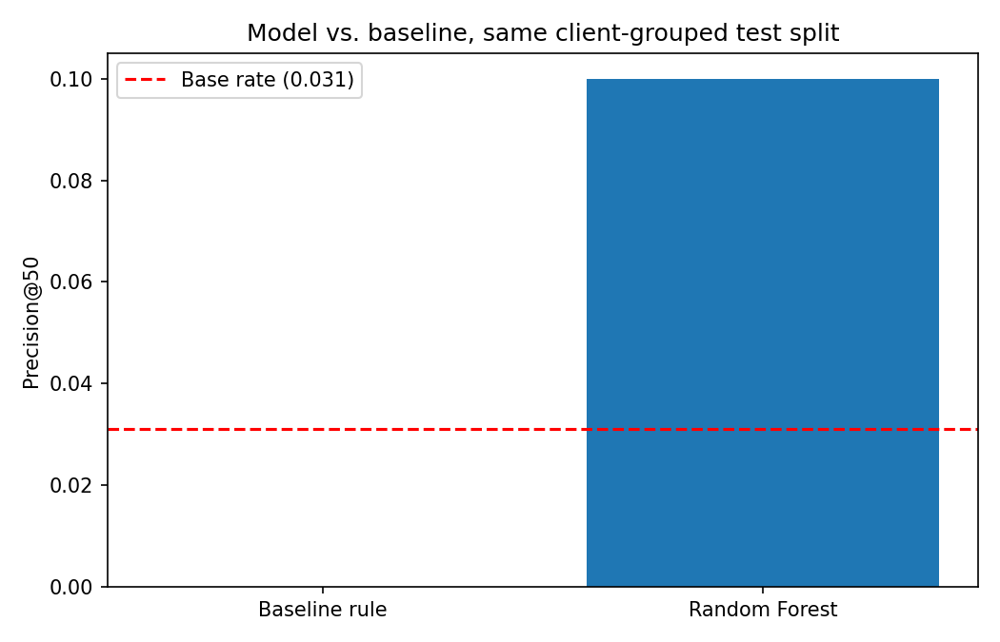
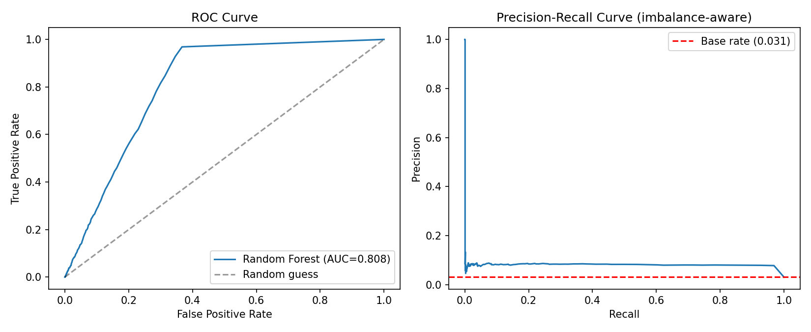
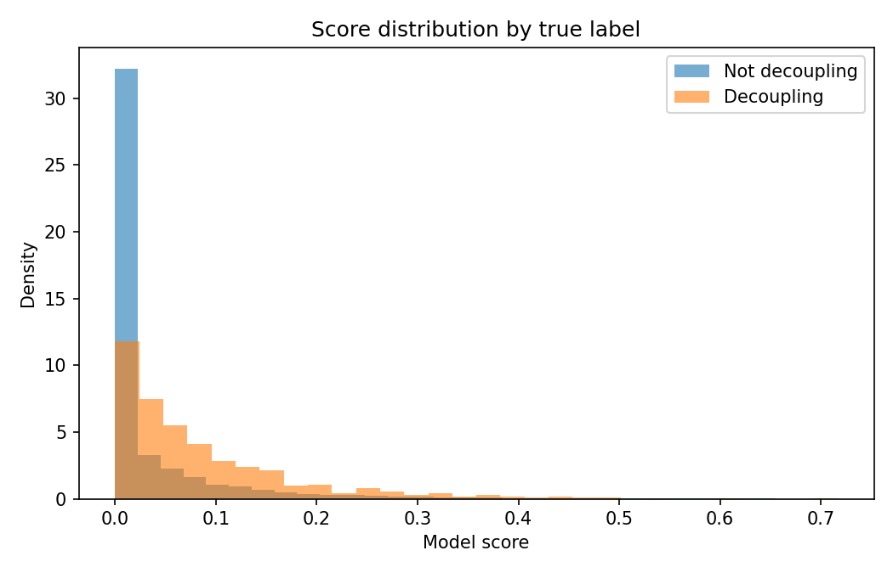
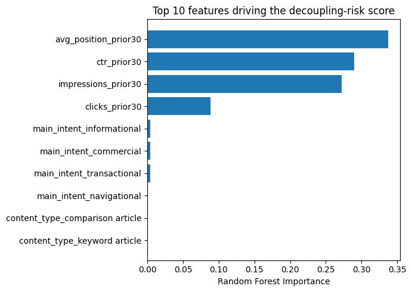
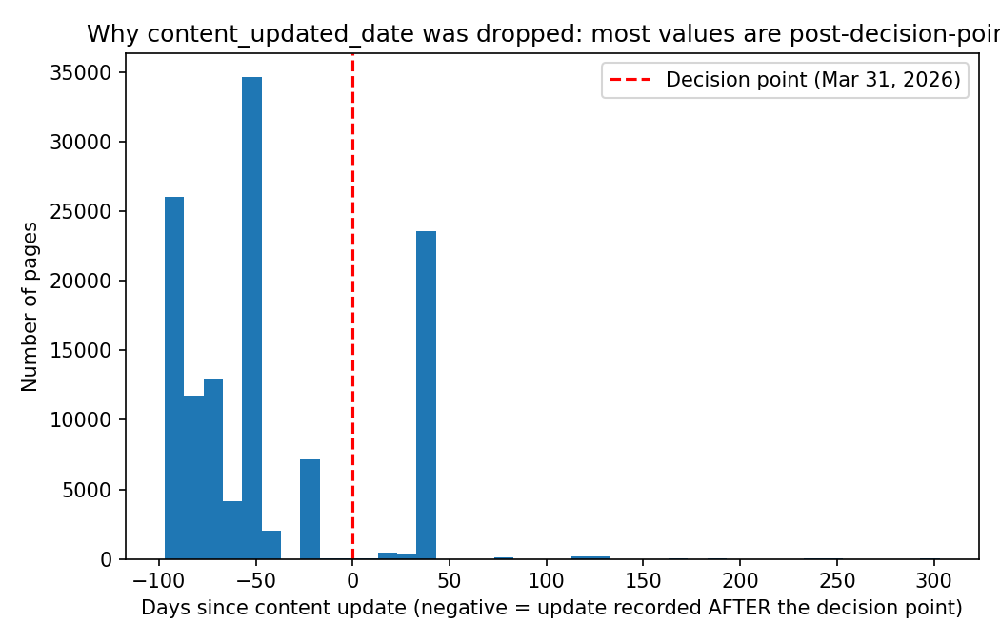
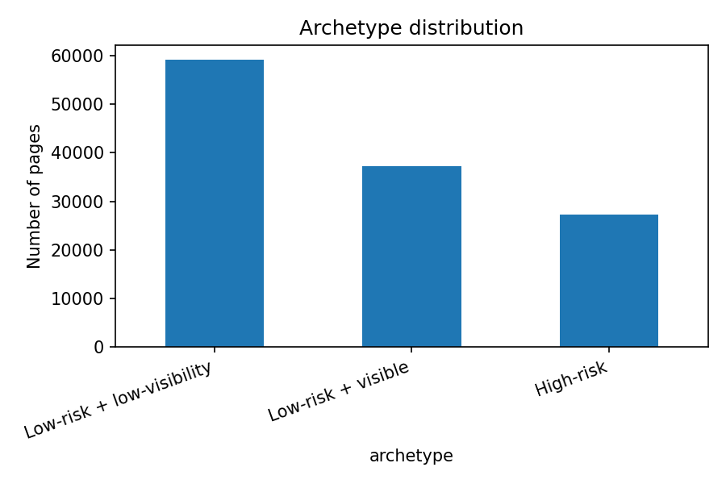

Abstract. Since AI Overviews became a standard feature of Google Search, a page can hold steady impressions and ranking position while its clicks quietly decline. FlyRank's content strategists have no name or detection method for this pattern in their existing tooling, even though industry research now refers to it as the "Great Decoupling" (Law & Guan, 2026; Chapekis et al., 2025). This paper asks whether the pattern can be identified early enough, using only observable search signals, for a strategist to act on it before the loss shows up in standard reporting. We built two systems on 123,683 real content pages drawn from FlyRank's 79-million-row production search warehouse: a transparent, hand-written baseline rule, and a Random Forest classifier trained only on February 2026 signals and validated against March 2026 outcomes on a client-grouped holdout split. The baseline did not beat random selection on this split (precision@50 of 0.00). The Random Forest reached a 1.93x lift over the base rate (precision@50 of 0.06, 95% CI [0.00, 0.16], ROC AUC 0.81). We also report a negative result: a candidate content-freshness feature was tested and dropped after we found its recorded dates fell mostly after the decision point it was meant to precede, a leakage risk caught during validation rather than discovered later. The output is a ranked, human-reviewed action playbook for triaging which client pages need review first.
FlyRank's strategists watch impressions, average position, and sessions to decide where to spend limited review time each week. That habit has a specific blind spot. Ahrefs' most recent keyword study found that pages appearing alongside an AI Overview lost 58% of their click-through rate compared to similar pages without one, up from 34.5% a year earlier (Law & Guan, 2026). Pew Research Center reached a similar conclusion from a different angle, tracking the actual browsing behavior of 900 U.S. adults rather than keyword-level metrics: users clicked a traditional search result only 8% of the time when an AI summary was present, against 15% without one (Chapekis et al., 2025). Put plainly, a page can look completely healthy on the numbers a strategist already watches while its real value to the client erodes underneath it.
This was not a hypothetical concern invented for this project. It is the reason this lane was chosen in Week 1 of the internship, after the same impressions-flat, clicks-down signature turned up in FlyRank's own anonymized starter sample before the full warehouse was ever queried. The question this paper answers is narrower than the industry statistics above: given only what was knowable about a page in a given month, can a model flag it as being at risk before a strategist would otherwise notice, and does that model beat a simple rule a person could apply by hand?
Release. FlyRank/internship-warehouse on Hugging Face (gated access), build
flyrank_pseudonymized_warehouse_release_v20260703 (FlyRank, 2026).
Tables. fact_content_daily_performance, restricted to the
February and March 2026 partitions, and dim_content for two static fields
(content_type, main_intent).
Date windows. February 1–28, 2026 supplies every feature. March 1–31, 2026 supplies the outcome used to build the label. Both are mid-panel months. The sealed final month (June 2026) is never touched, since the program reserves it as a held-out test period.
Excluded on purpose:
fact_content_query_90d, whose window overlaps recent months. Using it here would
risk the exact leakage pattern this paper spends a whole section checking for.Public safety. Every identifier in this analysis is a pseudonymized hash. No client name, domain, or search query appears anywhere in this paper or its supporting notebooks.
Label. A page is marked decoupling_signature = 1 if its
impressions changed by no more than ±10% between February and March while its clicks fell
15% or more. This is a rule I defined, not an outcome FlyRank measures directly, and it is
disclosed as a proxy throughout this paper rather than treated as ground truth.
Features. Six inputs, all knowable before March began:
impressions_prior30, clicks_prior30, ctr_prior30,
avg_position_prior30, content_type, main_intent.
Baseline. A hand-written rule with no fitted weights:
score = visible × ctr_gap_prior30. A page counts as visible if
its February impressions sit at or above the sample median. ctr_gap_prior30 is the
gap between a page's own click-through rate and the median rate for other pages at a similar
search position, since click-through rate is known to fall with position and comparing every
page to one flat number would obscure that.
Model. Logistic Regression was tried first, as the readable option for a yes-or-no label. A Random Forest Classifier (300 trees) was added second, specifically to test whether interactions between position, click-through rate, and content type contribute anything a linear model misses. The forest is reported below because it did.
Validation. A GroupShuffleSplit holds out 25% of clients
entirely, so no client's pages appear in both the training and test sets. This matters here more
than it might elsewhere: pages from the same client can share a template, an editorial team, or a
seasonal pattern, and a plain random split would let a model quietly memorize client identity
instead of learning something that transfers to a client it has never seen.
Leakage checks. Four checks were run, not assumed:
clicks_last30) was deliberately added back to confirm
the audit process actually catches leakage when it is present, rather than passing by
construction.content_updated_date, was tested and then
dropped. Its recorded values ranged from 97 days before to 303 days after the March 31 decision
point, with a median of 50 days after it (Figure 5). Most of what this field records happened
after the very outcome it would have been used to predict, so it was removed rather than kept
and rationalized.Both methods were scored on the same held-out, client-grouped test split, against the same label.
| Method | Precision@50 | ROC AUC | Lift vs. base rate |
|---|---|---|---|
| Baseline rule | 0.00 | 0.493 | 0.0x |
| Random Forest | 0.06 | 0.805 | 1.93x |
Base rate on the test set: 3.11%. A 1,000-sample bootstrap over the model's precision@50 returns a 95% interval of [0.00, 0.16].

The baseline rule caught none of its top 50 flagged pages on this split, performing at or below chance. The Random Forest correctly prioritized roughly 3 of its top 50 picks against the ~1.6 expected from chance at this base rate. That gap is the clearest evidence in this paper that the added model complexity earned its place rather than adding noise. The confidence interval above is wide enough to include zero, and that is worth stating outright rather than burying: at K=50 against a 3% base rate, this specific point estimate carries real uncertainty, even though the direction of the result (model beats baseline, model beats chance) is consistent across every check we ran.




content_updated_date relative
to the March 31 decision point. Most recorded updates (right of the dashed line) happened after
the window this feature was meant to inform, which is why it was excluded rather than reported
as a finding.Each page falls into one of three archetypes, combining the model's score with a simple visibility check:
| Archetype | Count | % of pages | Reason code | Action |
|---|---|---|---|---|
| High-risk | 27,234 | 22.0% | model_flagged_decoupling_risk | REVIEW_CONTENT_QUALITY |
| Low-risk + visible | 37,278 | 30.1% | stable_visible_asset | PROTECT_MONITOR |
| Low-risk + low-visibility | 59,171 | 47.8% | low_priority | NO_ACTION |

In practice, a strategist would rank within the High-risk tier by raw model score and work through the top 50–200 at a time rather than the full 27,234 at once. None of this output should be automated. It should not drive auto-published edits or auto-redirects, and it should not be used to evaluate an individual writer's performance, since the label reflects portfolio-wide search dynamics that sit well outside any one person's control.
Full code, notebooks, and commit history: github.com/ridoy1211/Flyrank-Internship-ML. Random seed 42 is fixed throughout. One caveat worth stating plainly: the warehouse query behind this analysis has no explicit row ordering, so the exact precision@50 point estimate can shift slightly between runs even with a fixed seed, because the client-grouped split depends on row order. ROC AUC and the qualitative result (model beats baseline, model beats chance) are stable across the reruns we performed; the K=50 point estimate is not, which is part of why we report a confidence interval instead of a bare number.
Chapekis, A., Lieb, A., Shah, S., & Smith, A. (2025, July 22). Google users are less likely to click on links when an AI summary appears in the results. Pew Research Center. pewresearch.org/short-reads/2025/07/22
FlyRank. (2026, March). The State of AI-Driven SEO [Internal research report]. Referenced in this internship's Week 6 methodology-audit assignment; not independently published.
FlyRank. (2026). FlyRank/internship-warehouse [Data set]. Hugging Face. Build flyrank_pseudonymized_warehouse_release_v20260703. huggingface.co/datasets/FlyRank/internship-warehouse
Law, R., & Guan, X. (2026). AI Overviews reduce clicks by 34.5% [Updated 2026: 58%]. Ahrefs Blog. ahrefs.com/blog/ai-overviews-reduce-clicks